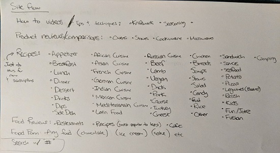

Site Flow
This is my siteflow plan. Most of it is just a list of categories that I want to be able to have on my app/page for the main categories such as "How to" videos, product reviews, recipe types,food reviews, etc. I also want to make use of the "#" search for my search bar.